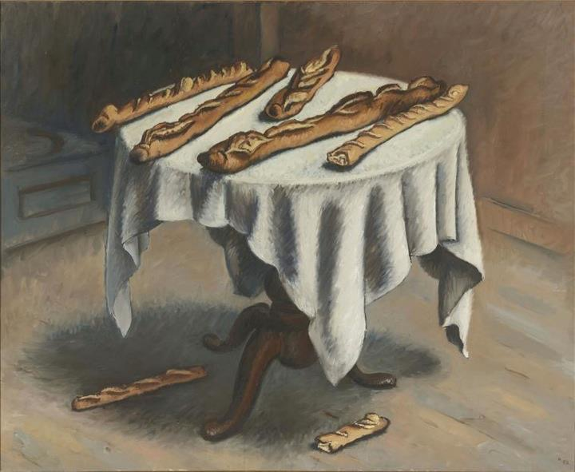

Baguette

Aprenderemos a hacer la baguette de tradicion francesa
para ello además de ocupar harina, agua, levadura y sal. Realizaremos la Baguette
en base a la norma francesa por lo que es necesario la utilizacion de un prefermento
o masa madre
- Harina 1kg
- Agua 670ml
- Levadura Fresca 10gr
- Sal 17-25gr
- Masa madre 300gr
- Poolish 300gr
- Primero tenemos que mezclar la maza madre y la poolish con el agua
- Agregamos la harina y la levadura y amasamos hasta empezar a formar la masa
- Luego añadimos la sal y continuamos el amasado por 10 a 15 minutos
- Se deja reposar la masa en bloque por 2 horas
- luego de transcurrido el tiempo se divide la masa en porciones de 350gr
- Se hace la preforma del baguette y se deja reposar 20 minutos en el meson
- Ahora hacemos la forma final de la baguette y reposamos la masa en tela hasta 2 horas
- Hornear por 20' a 250 grados con vapor